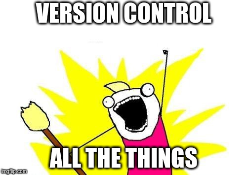
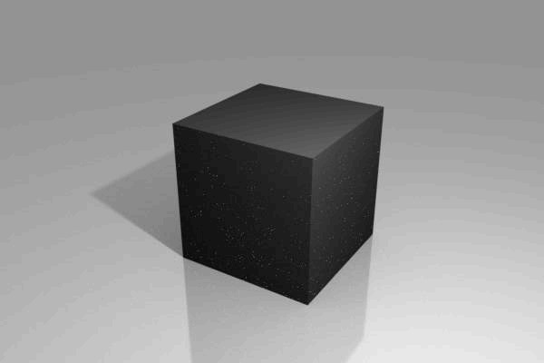
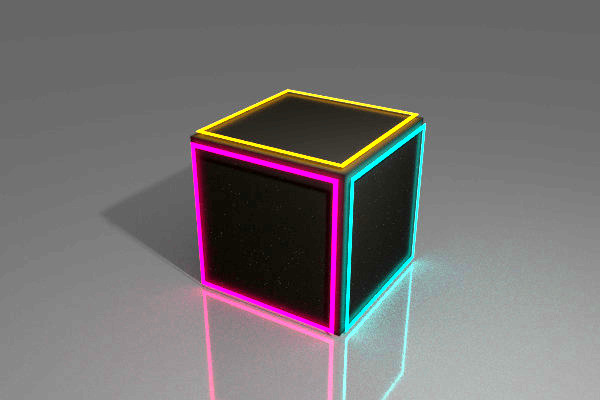
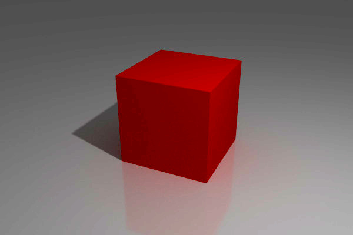
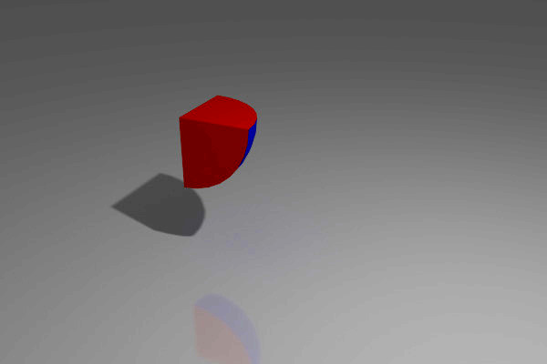
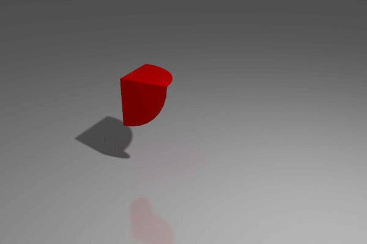
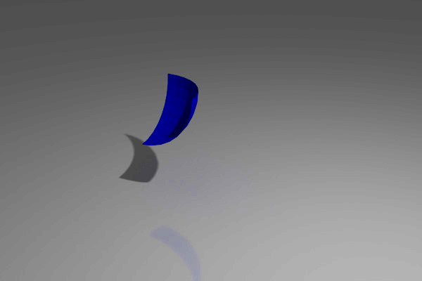
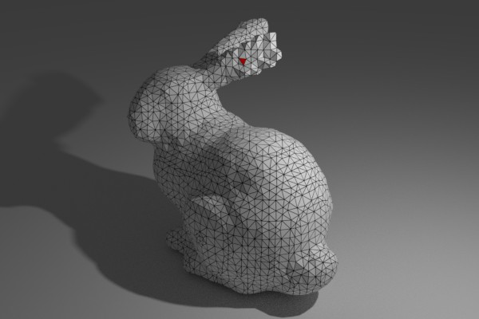

CSG Based CAD in Haskell
Overview
- Background and Motivation
- What is Constructive Solid Geometry?
- How do you implement it?
- Almost no Haskell!
Background

Background

Background
Blender
Blender?

Blender?

Blender?
OpenScad

OpenScad
OpenScad?
// The value of 'a' reflects only the last value set a = 0; echo(a); // 5 a = 3; echo(a); // 5 a = 5;
OpenScad?
WAT
OpenScad?
- Geometry isn't first-class/introspectable
- No Data Structures
- No Higher Order Functions
- No Namespaces
- Unintuitive Syntax/Scoping Rules
- Unhelpful Memorization
OpenScad?
Matt Aderethclojure.core/typing
https://www.youtube.com/watch?v=uk3A41U0iO4
Language Design is Hard
“I'm no language elitist, but language design is hard. There's a reason that some of the most famous computer scientists in the world are also language designers.”
- Jeff Atwood -
Use a Library
- CGAL, used in OpenScad, crazy fast, cryptic API
- csg.js, eew, JavaScript, also slow, incomplete
- csg-python, pretty nice, slow
- scad.clj, writes OpenScad ☹, I don't know Clojure
- Implicit Cad, doesn't output clean objects
Implicit CAD
Obviously I need to implement my own library . . .
. . .in Haskell
What is Haskell?
- Pure functional programming language
- Lazy evaluation
- Statically typed, with type inference
- Interesting Monadic IO
Why Haskell?
- The laziness might give interesting properties
- Interesting approach to IO, makes it easy to sandbox
- It can be highly efficient
- Syntax secretly quite simple
- Easy to build a DSL in
What goes into a CSG implementation?
Practical Algorithms for 3D Computer Graphics
2nd Edition, 2013, (Ferguson), Page 419
3D Objects
3D Objects
type Vector = (Double, Double, Double)
3D Objects

3D Objects
type Vector = (Double, Double, Double) type Polygon = [Vector] type Solid = [Polygon]
3D Objects
type Vector = (Double, Double, Double) type Triangle = (Vector, Vector, Vector) type Solid = [Triangle]
3D Objects
flipped :: Tri -> Tri flipped (a, b, c) = (c, b, a)
CSG Algorithm
CSG Algorithm
CSG Algorithm
CSG Algorithm
CSG Algorithm
CSG Algorithm
CSG Algorithm
BSP Trees
“I'm a huge proponent of designing your code around the data, rather than the other way around”
. . .
“Bad programmers worry about the code. Good programmers worry about data structures and their relationships.”
- Linus Torvalds -
CSG Algorithm
CSG Algorithm
CSG Algorithm
CSG Algorithm
CSG Algorithm
data BspTree = BspTree { coplanarTriangles :: [Tri], frontOf :: BspTree, backOf :: BspTree } emptyBspTree :: BspTree emptyBspTree = BspTree [] emptyBspTree emptyBspTree
Test if a point is enclosed:
encloses :: BspTree -> Vector -> Bool encloses (BspTree [] _ _) _ = False encloses tree vertex = (BspTree (t:_) front back) = case vectorSideOfPlane (triToPlane t) v of FRONT -> case front of (BspTree [] _ _) -> False a -> encloses front vertex BACK -> case back of (BspTree [] _ _) -> True a -> encloses back vertex COPLANAR -> case back of (BspTree [] _ _) -> True a -> encloses back vertex
Test if a point is enclosed:
Test if a point is enclosed:
Test if a point is enclosed:
Test if a point is enclosed:
Test if a point is enclosed:
Extending the algorithm to clip triangles
Extending the algorithm to clip triangles
Does it work?
Does it Work?
object :: Csg.BspTree object = (cube `Csg.subtract` cross) `Csg.intersection` sphere where sphere = Csg.unitSphere 32 16 cube = Csg.uniformScale 1.6 Csg.unitCube cylinder = Csg.scale (0.5, 0.5, 3.0) $ Csg.unitCylinder 32 axes = [(1.0, 0.0, 0.0), (0.0, 1.0, 0.0), (0.0, 0.0, 1.0)] cross = foldl1 Csg.union $ map (\a -> Csg.rotate a (pi/2) cylinder) axes
Does it Work?
Does it Work?
dieFaces :: [[[Int]]] dieFaces = [[ [0, 0, 0], [0, 1, 0], [0, 0, 0]], [[1, 0, 0], [0, 0, 0], [0, 0, 1]], [[1, 0, 0], [0, 1, 0], [0, 0, 1]], [[1, 0, 1], [0, 0, 0], [1, 0, 1]], [[1, 0, 1], [0, 1, 0], [1, 0, 1]], [[1, 0, 1], [1, 0, 1], [1, 0, 1]]]
Does it work
object :: Csg.BspTree object = combinedFaces `Csg.intersection` sphere where holeShape = Csg.uniformScale 0.38 $ Csg.unitCone 16 facePatterns = map (reifyFace holeShape) dieFaces translateFaceIntoPlace = Csg.translate (0.0, 0.0, -0.75) . Csg.uniformScale 0.35 positionedPatterns = map (\(r, f) -> r f) $ zip rotations $ map translateFaceIntoPlace facePatterns cube = Csg.uniformScale 1.5 Csg.unitCube combinedFaces = foldl Csg.subtract cube positionedPatterns sphere = Csg.unitSphere 32 16
Does it Work?
Does it Work?
Further Work?
- A fancy web UI
- Different types of operations
- 2D CAD + Extrusions
- Convex Hull
- Minkowski Addition
- Produce more efficient geometry
- Experiment with laziness (infinite shapes)
- Unit Testing
Links:
Code:
https://bitbucket.org/joe_warren/csg-haskell
Slides:
https://bitbucket.org/joe_warren/csg-talk